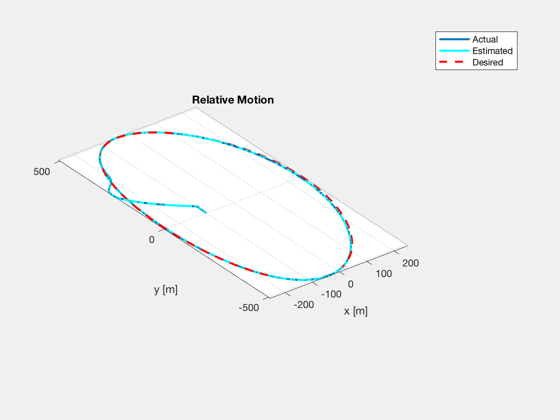
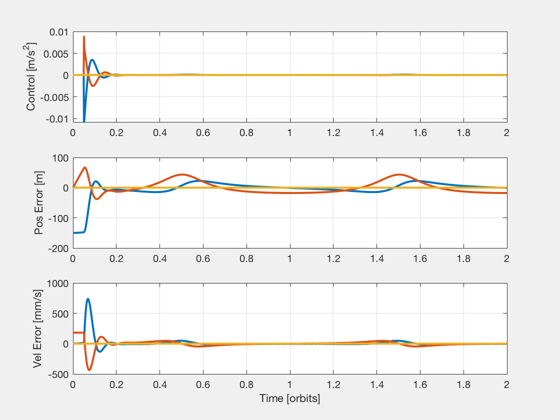
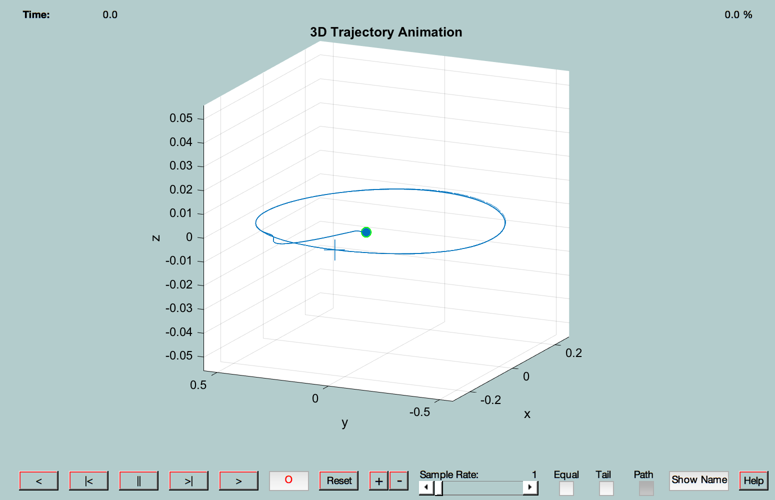

Demonstrate LQG control of relative motion in an eccentric orbit
Usage: LQGEccDemo;
------------------------------------------------------------------------
------ Inputs ------ none
------- Outputs ------- none
------------------------------------------------------------------------ See also C2DZOH, QHills, QTForm, Mag, RK4TI, LinOrbLQG, FFEccProp, ECI2Hills, FFEccGoals2Hills, Hills2ECI, Nu2TimeDomain, OrbRate, AnimationGUI, El2RV, M2Nu, Period, RV2El ------------------------------------------------------------------------
Contents
- how many orbits to simulate?
- after how many orbits do we turn the control on?
- orbit parameters
- control gains
- noise levels
- reference orbit
- simulation time step and duration
- target geometry
- compute target trajectory
- initial relative state
- second orbit
- time vector
- generate random noise vector
- initialize matrices for plotting
- plot trajectory
- plot control, position error, velocity error
- animate
%------------------------------------------------------------------------- % Copyright (c) 2004 Princeton Satellite Systems, Inc. % All rights reserved. % Since version 7. %------------------------------------------------------------------------- % 24-Feb-2017: update output from LinOrbLQG (4 matrices) %------------------------------------------------------------------------- %%%%%%%%%%%%%%%%%%%%%%%%%%%%%%%%%%%%%%%%%%%%%%%%%%%%%%%%%%%%%%%%%%% %%%%%%% BEGIN USER INPUT %%%%%%%%%%%%% BEGIN USER INPUT %%%%%%%%%%% %%%%%%%%%%%%%%%%%%%%%%%%%%%%%%%%%%%%%%%%%%%%%%%%%%%%%%%%%%%%%%%%%%%
how many orbits to simulate?
nOrbits = 2.0;
after how many orbits do we turn the control on?
tControlOn = 0.05;
orbit parameters
a = 8000; e = 3e-1; inc = pi/4;
control gains
QG = diag( [5e-3*ones(1,3), 1e-3*ones(1,3)] ); % Scalar estimator gain (make small) RG = 1e3; % Scalar regulator gain (make big)
noise levels
posSTD = 5.0; % standard deviation of relative position estimate [cm] velSTD = 1.0; % standard deviation of relative position estimate [mm/s] %%%%%%%%%%%%%%%%%%%%%%%%%%%%%%%%%%%%%%%%%%%%%%%%%%%%%%%%%%%%%%%%%%% %%%%%%%%%%%%%%%%%%%%%%%%% END USER INPUT %%%%%%%%%%%%%%%%%%%%%%%%%% %%%%%%%%%%%%%%%%%%%%%%%%%%%%%%%%%%%%%%%%%%%%%%%%%%%%%%%%%%%%%%%%%%%
reference orbit
n = OrbRate(a); T = Period(a); W = pi/3; w = pi/4; M = pi; el = [a, inc, W, w, e, M]; [r,v] = El2RV(el); x0 = [r;v];
simulation time step and duration
dTSim = 10;
target geometry
gF = struct('y0',0.0,'xMax',0.25,'nu_xMax',0,'zMax',0,'nu_zMax',0);
compute target trajectory
nu0 = M2Nu(e,el(6)); [xF0,D,dH] = FFEccGoals2Hills( e, nu0, gF, n );
initial relative state
g0 = struct('y0',0.0,'xMax',0.1,'nu_xMax',0,'zMax',0,'nu_zMax',0); xH0 = FFEccGoals2Hills( e, nu0, g0, n );
second orbit
x1 = Hills2ECI( x0, xH0 );
time vector
t = 0:dTSim/T:nOrbits; nSim = length(t);
generate random noise vector
posSTD = posSTD*1e-5; % standard deviation of relative position error (convert from cm to km) velSTD = velSTD*1e-6; % standard deviation of relative velocity error (convert from mm/s to km/s) noise = [randn(3,nSim)*posSTD; randn(3,nSim)*velSTD];
initialize matrices for plotting
xHEst_plot = zeros(6,nSim); xHDes_plot = zeros(6,nSim); xH_plot = zeros(6,nSim); aH_plot = zeros(3,nSim); nu_plot = zeros(1,nSim); aE0 = zeros(3,1); xK = xH0; xH = xH0; rhs = @(x,a) [x(4:6); a - (3.98600436e5)*x(1:3)/norm(x(1:3))^3]; for i=1:nSim % Hills-frame state estimate xHEst = xH + noise(:,i); % current desired Hills-frame state [el,E,nu] = RV2El( x0(1:3), x0(4:6) ); xHDes = FFEccProp( D, nu, el(5), dH ); xHDes = Nu2TimeDomain( xHDes, n, el(5), nu ); if( t(i) > tControlOn ) % compute new LQG controller [AK,BK,CK,DK] = LinOrbLQG( el, QG, RG ); [AK,BK] = C2DZOH(AK,BK,dTSim); % discretize with sample time of dTSim % update controller aH = CK*xK + DK*[xHDes; xHEst]; xK = AK*xK + BK*[xHDes; xHEst]; else aH = zeros(3,1); end % rotate Hill's frame acceleration to ECI frame qEH = QHills( x0(1:3), x0(4:6) ); aE1 = QTForm( qEH, aH ); % integrate x0 = RK4TI(rhs,x0,dTSim,aE0); x1 = RK4TI(rhs,x1,dTSim,aE1); % store for plotting aH_plot(:,i) = aH; xH_plot(:,i) = xH; xHDes_plot(:,i) = xHDes; xHEst_plot(:,i) = xHEst; nu_plot(i) = nu; % Hills-frame state xH = ECI2Hills( x0, x1 ); end assignin('base','t',t); assignin('base','nu',nu_plot); assignin('base','xH',xH_plot); assignin('base','aH',aH_plot); assignin('base','xHDes',xHDes_plot); assignin('base','xHEst',xHEst_plot); k = min( find( tControlOn >= t ) ); fprintf('\n Total Delta-V: \t %f m/s\n',sum(Mag(aH_plot*dTSim))*1e3) fprintf( 'Mean Position Error: \t %f m \n\n',mean(Mag(xHDes_plot(1:3,k:end)-xH_plot(1:3,k:end)))*1e3)
Total Delta-V: 2.534435 m/s
Mean Position Error: 25.346870 m
plot trajectory
figure, plot3(xH_plot(1,:)*1e3, xH_plot(2,:)*1e3, xH_plot(3,:)*1e3, 'linewidth',2), hold on plot3(xHEst_plot(1,:)*1e3, xHEst_plot(2,:)*1e3, xHEst_plot(3,:)*1e3,'c', 'linewidth',2), plot3(xHDes_plot(1,:)*1e3, xHDes_plot(2,:)*1e3, xHDes_plot(3,:)*1e3,'r--', 'linewidth',2) title('Relative Motion'), xlabel('x [m]'), ylabel('y [m]'), zlabel('z [m]'), grid on, axis equal, zoom on legend('Actual','Estimated','Desired');
plot control, position error, velocity error
figure, subplot(311) plot(t,aH_plot*1e3,'linewidth',2), grid on ylabel('Control [m/s^2]') err = xHDes_plot - xHEst_plot; subplot(312) plot(t,err(1:3,:)*1e3,'linewidth',2), grid on ylabel('Pos Error [m]') subplot(313) plot(t,err(4:6,:)*1e6,'linewidth',2), grid on ylabel('Vel Error [mm/s]'), xlabel('Time [orbits]') zoom on
animate
sc = struct; sc.r = xH_plot(1:3,:); sc.t = t; tgt.r = xHDes_plot(1:3,:); tgt.t = t; AnimationGUI('initialize',sc,tgt); %--------------------------------------